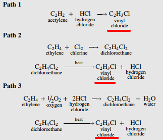
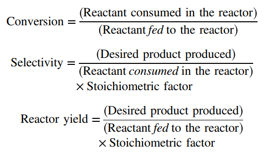
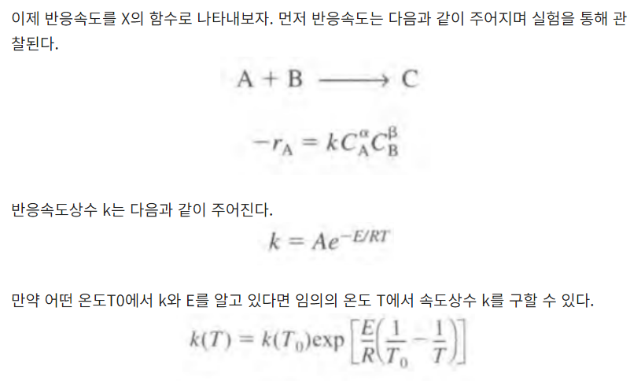
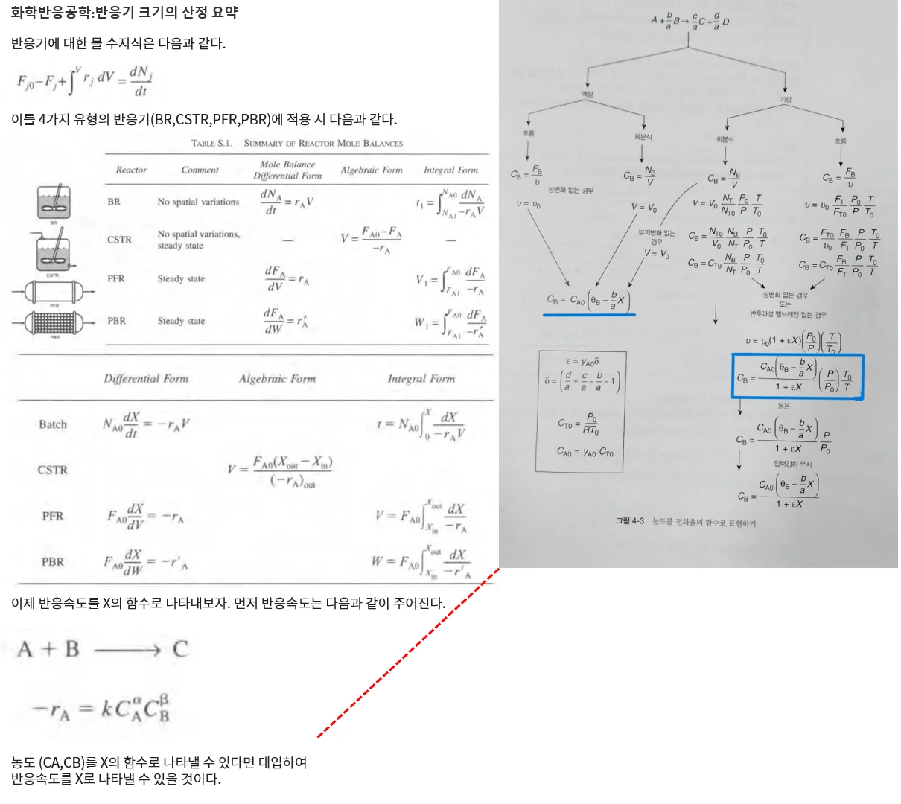
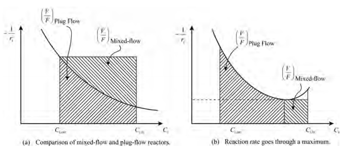
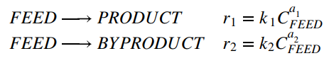

스미스의 화학공정설계: 제 2장. 화학 반응기의 선정
공정 설계가 반응기로부터 시작되므로 반응기의 선정은 매우 중요하다.
먼저 반응기의 다음 인자들에 대한 결정이 이루어져야 한다.
1.반응기 종류
2.촉매
3.부피
4.조업 조건(P,T)
5.상
6.원료 조건(농도, 온도, 압력)
먼저 몇 가지 기초적인 개념을 학습하자. 여기서는 산발적으로 개념을 던지는 단계이다.
2.1:반응경로
어떤 생산물을 만드는 경로는 여러 개가 존재할 수 있다. 이를 반응 경로라고 하며 가격, 환경 등의 요소를 고려하여 반응경로를 먼저 선정해야 한다.

2.2:반응 시스템의 종류
반응을 체계화 해보자. 반응은 총 5가지로 분류할 수 있다.
단일 반응, 병렬 반응, 직렬반응, 병직렬반응, 중합반응
2.3:반응기의 성능
반응기의 성능을 나타내는 척도는 세가지가 있다.

2.4:반응속도: 우리가 아는 속도 법칙이다.

2.5: 이상화된 반응기 모델

일반적으로 CSTR은 반응속도가 가장 낮은 부분에서 시작하여 균일하게 진행되지만 PFR은 초기에 높은 반응속도로 진행되어 점점 속도가 느려지게 된다. 따라서 똑같은 반응을 일으키는 데엔, PFR이 더 적은 부피가 드는 경우가 일반적이다. 하지만 반응속도의 역전이 일어나는 경우에는 PFR과 CSTR의 조합이 필요할 수도 있다.

2.6:이상화된 반응기 모델의 선택
1)단일반응: 회분 or PFR
2)병렬반응:

a1>a2면 회분식 또는 평류, 그게 아니면 CSTR.
3)직렬반응: 회분식 or PFR
4)병직렬-상황에 따라 다르다. 직렬반응은 회분식이나 PFR을 요구하지만 병렬반응이 CSTR을 선호할 수도..
2.7:반응기 성능의 선택
이제 설계단계에서 반응기 선택의 목표를 정의하는 것이 가능하게 되었다. 먼저 처음 고려해야 하는 것은 부산물의 최소화이다.
1)단일반응: 최대 반응의 95% 정도가 일어나도록 반응기를 운전한다.
2)병렬반응: 부산물의 최소화를 위해 선택도가 최대가 되어야 한다.
3)직렬반응: 이 경우 전환율이 높아지면 선택도가 낮아질 수 있다. 따라서 약 50% 정도의 전환이 바람직하다.